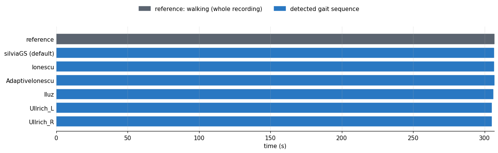
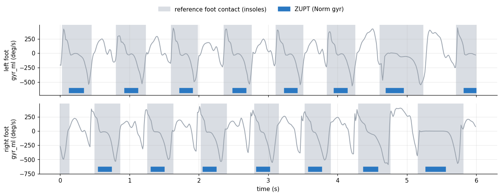
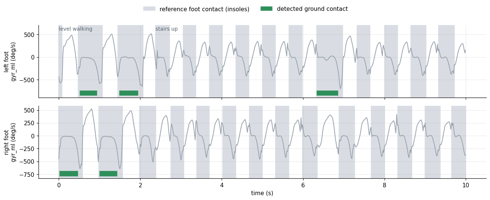
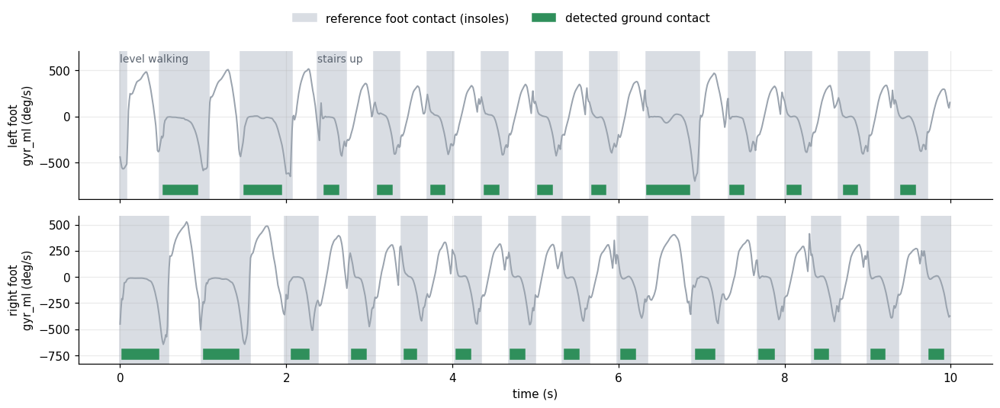

Biomechanical Validation for Neon-IMU-Analysis
This page shows the validation of our biomechanical pipeline which integrates different biomechanical principles.
Pipeline
The validation pipeline: Pupil Labs Neon glasses and three IMUs (pelvis, left and right foot) are calibrated and time-synchronised; the IMU data go through gait-sequence, stride and gait-event detection, zero-velocity updates (ZUPT) and WGL CMP to the biomechanical metrics. The trajectory and eye-tracking branches are greyed out (not validated here); the red boxes give the datasets each step is checked on. The overall pipeline is in the Neon-IMU-Pipeline repository.
Datasets
| dataset | sensors | participants | activities used | event reference |
|---|---|---|---|---|
| NEWBEE [2] | Xsens full-body suit (17 IMUs) and pressure insoles | 20 healthy adults, 18–69 years | 3 outdoor courses in an urban environment with different paths: level walking, curbs, ramps and stairs (60 trials) | insoles |
| WMCG [3] | IMUs and optical motion capture | 10 healthy adults, 21–29 years | level walking (slow, normal, fast) and stair walking (50 trials) | markers (Bonci et al.) |
| WearPD-Gait [4] | IMUs (13 Xsens) and pressure insoles; pressure walkway | older adults: Parkinson’s disease 67 ± 8 years, controls 74 ± 9 years (mean ± SD); walkway 99 participants with PD, free walking 55 (2 controls) | level walking on the pressure walkway (self-paced and hurried; 196 recordings) and free walking including stairs (55 recordings) | walkway (walkway walking), insoles (free walking) |
From each dataset we use the lower-back (pelvis) IMU and the two foot IMUs. Ages: NEWBEE and WearPD-Gait from their papers; WMCG from the dataset’s participant file (the paper gives 23.9 ± 2.9 years).
Reference data
I. Gait-sequence detection
WearPD-Gait [4]: the dataset’s activity labels, annotated frame by frame from synchronised video. Walking = Walk and Turn on the walkway, plus Stairs in free walking; not walking = Standing (and Chair in free walking). Frames with any other label (e.g. opening a door) or no label are not scored. NEWBEE [2]: every recording is continuous walking, so the whole recording is the reference walking period.
II. Event detection
The reference events come from pressure insoles where available: NEWBEE [2] and WearPD-Gait free walking [4] (insole total force > 20 N). For WearPD-Gait walkway walking, the reference is the pressure walkway.
For WMCG [3], the reference is marker-based event detection from Bonci et al. [5]: their variable-threshold (Ghoussayni, RWS) detector, run unchanged, with each participant’s average walking speed (mean of their normal-walking and stair-descent speeds).
We validated this marker-based detection on the dataset of Baetens et al. [6] (20 participants; level walking at three speeds, and stair ascent and descent step-over-step and step-by-step) against its Moticon insoles (total force > 20 N; events matched within ±250 ms). It found 80–98% of the insole events, with a mean absolute timing error of 23–63 ms for initial contacts (IC) and 34–73 ms for final contacts (FC):
| activity | IC events | IC found | IC MAE (ms) | FC events | FC found | FC MAE (ms) |
|---|---|---|---|---|---|---|
| Slow walking | 1197 | 95% | 42 | 1194 | 92% | 44 |
| Normal walking | 1087 | 98% | 23 | 1090 | 96% | 60 |
| Fast walking | 1068 | 89% | 24 | 1067 | 88% | 73 |
| Stair ascent (step-over-step) | 1518 | 96% | 49 | 1515 | 95% | 38 |
| Stair descent (step-over-step) | 1511 | 96% | 31 | 1513 | 96% | 53 |
| Stair ascent (step-by-step) | 2517 | 97% | 60 | 2517 | 97% | 34 |
| Stair descent (step-by-step) | 2493 | 80% | 63 | 2493 | 95% | 44 |
III. ZUPT and foot contact
Reference foot contacts: from one initial contact to the next toe-off of the same foot. NEWBEE [2]: the insoles’ step and lift events (the dataset’s is_step / is_lifted labels). WearPD-Gait free walking [4]: insole total force above 20 N (gaps shorter than 50 ms bridged, contacts shorter than 100 ms dropped). Walking types as for event detection.
IV. Gait metrics
NEWBEE [2]: stride and step metrics as in Hasenjäger & Wiebel-Herboth [7], with the steps segmented by the insoles’ first ground contacts (is_step) and the foot positions from Xsens MVN (foot segment origin). Step distance: the distance between the two feet’s positions at two consecutive first ground contacts of opposite feet; step period: the time from the first ground contact of one foot to the next ground contact of the other foot. Stride distance and stride time: the same between two consecutive first ground contacts of one foot. Distances are horizontal, as gaitmap’s stride length.
WMCG [3]: a Visual3D lower-body CGM model, modified to the dataset’s marker set; the gait events were set and checked in Qualisys, and the stride and step metrics (stride length and width, cycle, stance and swing time) computed with Qualisys and Visual3D. Used here: stance and swing time and stride width from Visual3D; stride length, stride time, step distance and step period from the markers at the reference heel strikes (midpoint of the heel and first-metatarsal markers, horizontal, as gaitmap’s stride length). Centre of mass: OpenSim BodyKinematics with the dataset’s scaled OpenSim model and inverse-kinematics (.mot) files.
WearPD-Gait [4]: the dataset’s walkway summaries (ProtoKinetics walkway, PKMAS software): per participant and task (self-paced and hurried walking) the mean, SD and number of samples of step length, stride length, stride width, step time, stride time and stride velocity, from the steps on the walkway.
Margin of stability (NEWBEE and WMCG): Hof’s mediolateral margin of stability as in Fino et al. [8]: extrapolated centre of mass XCoM = CoM + v / ω₀ with ω₀ = √(g / l) (l = leg length: NEWBEE the participant’s hip height, WMCG the dataset’s leg length), the mediolateral axis from the instantaneous horizontal CoM velocity, MoS = base of support − XCoM along it, positive when the base of support is to the right of the XCoM for either foot. Base of support: NEWBEE the midpoint of the Xsens foot origin (ankle) and toe; WMCG the midpoint of the heel and first-metatarsal markers (LHEE / RHEE, L_1MT / R_1MT). Taken at each initial contact and at mid-stance (halfway initial contact → toe-off). CoM: NEWBEE the Xsens centre of mass (6 Hz low-pass); WMCG the OpenSim centre of mass.
Metrics
I. Gait-sequence detection
Frame by frame, against the reference walking periods:
- Sensitivity: the percentage of reference walking time that lies inside a detected gait sequence.
- Specificity: the percentage of reference not-walking time that lies outside every detected gait sequence (WearPD-Gait only; NEWBEE has no not-walking time).
- Accuracy: the percentage of all scored time classified correctly (walking or not walking).
II. Event detection
- Matching. Each detected event is paired one-to-one with the nearest reference event of the same type (initial contact, IC; toe-off, TC), closest pairs first, within ±100 ms. Foot detectors (and the modified pipeline) are matched per foot, and the two feet’s counts are added. The pelvis detectors do not say which foot an event belongs to, so they are matched against the reference events of both feet pooled.
- TP (true positive): a detected event paired with a reference event. FP (false positive): a detected event with no reference event within ±100 ms. FN (false negative): a reference event with no detected event.
- Found (recall): TP / (TP + FN), the percentage of reference events that were detected.
- MAE: mean absolute timing error (IMU − reference) over the TPs, in ms.
III. ZUPT and foot contact
- Found: the % of reference foot contacts that hold at least one ZUPT (or, for the contact mask, at least one detected contact period) of that foot.
- Inside [square brackets]: the % of ZUPT time (or detected contact time) around each reference contact — the contact and the swing after it — that lies inside a reference contact of that foot. Low values mean ZUPTs in swing.
IV. Gait metrics
- Pairing. Strides: an IMU stride and the reference stride of the same foot whose last initial contact lies within ±100 ms of the IMU stride’s IC. Steps: the reference step that ends at the landing foot’s last initial contact inside the IMU step. WMCG step width: each Visual3D stride paired with the IMU step in which the other foot lands inside that stride.
- Bias (SD): mean and standard deviation of IMU − reference over the paired strides or steps (WearPD-Gait: over the recordings’ means). r: Pearson’s correlation of the paired values.
- Large change: a stride or step whose reference value differs from the trial’s mean (per walking type) by more than 1.5 reference SD. n: how many; r: correlation of the IMU and reference deviations, each from its own trial mean; same direction: the share where the IMU deviation has the same sign as the reference one (both larger, or both smaller, than usual).
- Without turns (WMCG): leaving out the turns of the course — strides whose direction (the foot’s markers at its two initial contacts) changes by more than 30° from that foot’s previous stride, and the steps landing in them.
- MoS: r between the pipeline’s MoS proxy and the reference MoS (only r, as the proxy is an acceleration).
Results
Snapshot. In general, the modified pipeline which uses a circular logic has the best results for most cases. Results vary with dataset. Adding context-based adaptation (for example Herzer for stairs) would help improve results more.
I. Gait-sequence detection

Example: one NEWBEE recording (id02_courseC). Top row: the reference (the whole recording is walking). Rows below: the gait sequences of each detector.

Example: one WearPD-Gait free-walking recording (NLS193_control_FreeWalk). Top row: the reference labels (dark: walking; light: standing or chair; blank: not scored, e.g. opening a door). Rows below: the gait sequences of each detector.
| detector | NEWBEE | WearPD-Gait walkway | WearPD-Gait free walking | ||||
|---|---|---|---|---|---|---|---|
| sensitivity | sensitivity | specificity | accuracy | sensitivity | specificity | accuracy | |
| silviaGS (pipeline default) | 100% | 99% | 95% | 98% | 100% | 87% | 95% |
| Ionescu | 100% | 97% | 100% | 98% | 99% | 94% | 97% |
| AdaptiveIonescu | 80% | 94% | 100% | 95% | 91% | 98% | 94% |
| Iluz | 100% | 100% | 81% | 94% | 100% | 89% | 96% |
| Ullrich_L | 98% | 86% | 93% | 82% | 92% | 83% | 89% |
| Ullrich_R | 98% | 88% | 91% | 82% | 93% | 87% | 89% |
NEWBEE: pooled over all recordings. WearPD-Gait: median over recordings.
II. Event detection

Example: five gait cycles of level walking from NEWBEE (trial id02_courseC). Signal: left-foot ML angular velocity. Vertical lines: insole reference for the left foot (solid IC, dashed TC). Markers: detected events, drawn on the signal — foot: Rampp on the Roth 2021 stride list; pelvis: IcdIonescu (IC) and McCamley gauss2 (TC) inside the silviaGS gait sequences. The pelvis does not say which foot an event belongs to, so only the pelvis events whose nearest reference event is a left-foot one are shown.
Foot detectors (Rampp, Herzer, Roth) on the Roth 2021 stride list. Pelvis detectors (IcdIonescu, IcdShinImproved, McCamley with the gauss1 or gauss2 wavelet and IC found at zero crossings (zc) or peaks; its TC does not depend on zc / peaks) inside the gait sequences of silviaGS. Modified pipeline: integrates the methods above (WGL CMP, gaitmap, etc.) with custom software and logic. Details will be provided in the paper. Each cell: recall, the % of reference events detected (TP / (TP + FN)), with the MAE in ms in round brackets. Overall column only: precision in square brackets, the % of detected events that match a reference event (TP / (TP + FP)), over all detections in the recordings; it cannot be split by activity because false detections are not labelled.
NEWBEE
| detector | sensor | event | by activity | level walking, by position | |||||||
|---|---|---|---|---|---|---|---|---|---|---|---|
| overall | level walking | ramps | stairs up | stairs down | curbs | first/last step | turning | straight | |||
| Rampp | feet | IC | 97% (30) [99%] | 98% (29) | 100% (29) | 94% (33) | 71% (37) | 98% (26) | 2% (18) | 97% (28) | 99% (29) |
| Herzer | feet | IC | 94% (39) [95%] | 93% (40) | 95% (39) | 94% (34) | 92% (39) | 95% (38) | 2% (20) | 93% (40) | 94% (40) |
| Roth | feet | IC | 37% (59) [49%] | 35% (60) | 33% (62) | 48% (53) | 60% (55) | 46% (54) | 0% | 36% (59) | 35% (60) |
| Modified pipeline | feet | IC | 98% (30) [98%] | 98% (29) | 100% (29) | 95% (33) | 87% (40) | 98% (26) | 2% (18) | 97% (28) | 99% (29) |
| IcdIonescu | pelvis | IC | 86% (49) [87%] | 88% (51) | 88% (45) | 69% (53) | 78% (43) | 89% (54) | 23% (37) | 87% (51) | 89% (51) |
| IcdShinImproved | pelvis | IC | 78% (54) [79%] | 80% (57) | 82% (50) | 56% (56) | 59% (45) | 72% (57) | 34% (45) | 77% (56) | 81% (57) |
| McCamley gauss1 (zc) | pelvis | IC | 70% (60) [71%] | 69% (65) | 73% (56) | 55% (57) | 83% (44) | 67% (63) | 20% (61) | 68% (64) | 70% (65) |
| McCamley gauss2 (zc) | pelvis | IC | 4% (58) [4%] | 1% (75) | 2% (91) | 13% (51) | 47% (53) | 2% (85) | 2% (72) | 2% (69) | 0% (83) |
| McCamley gauss2 (peaks) | pelvis | IC | 6% (82) [6%] | 5% (83) | 5% (86) | 18% (76) | 12% (80) | 3% (79) | 0% (20) | 5% (76) | 5% (85) |
| Rampp | feet | TC | 94% (34) [96%] | 96% (33) | 97% (34) | 82% (46) | 76% (31) | 96% (30) | 0% | 95% (32) | 96% (33) |
| Herzer | feet | TC | 90% (50) [90%] | 90% (50) | 90% (49) | 90% (49) | 88% (45) | 92% (51) | 0% | 90% (50) | 91% (51) |
| Roth | feet | TC | 91% (45) [92%] | 91% (45) | 92% (44) | 90% (48) | 87% (47) | 92% (49) | 0% | 91% (46) | 92% (45) |
| Modified pipeline | feet | TC | 95% (34) [96%] | 96% (33) | 97% (34) | 83% (46) | 97% (33) | 96% (30) | 55% (31) | 95% (32) | 96% (33) |
| McCamley gauss1 (zc) | pelvis | TC | 7% (77) [7%] | 3% (86) | 10% (83) | 6% (70) | 30% (58) | 4% (82) | 0% (100) | 4% (84) | 3% (86) |
| McCamley gauss2 (zc) | pelvis | TC | 66% (58) [68%] | 71% (60) | 63% (57) | 74% (47) | 33% (67) | 62% (66) | 41% (53) | 65% (61) | 72% (60) |
| McCamley gauss2 (peaks) | pelvis | TC | 66% (58) [68%] | 71% (60) | 63% (57) | 74% (47) | 33% (67) | 62% (66) | 41% (53) | 65% (61) | 72% (60) |
WMCG
| detector | sensor | event | by activity | level walking, by position | |||||
|---|---|---|---|---|---|---|---|---|---|
| overall | level walking | stairs up | stairs down | first/last step | turning | straight | |||
| Rampp | feet | IC | 74% (36) [89%] | 83% (28) | 75% (67) | 30% (61) | 8% (23) | 88% (35) | 95% (26) |
| Herzer | feet | IC | 81% (21) [92%] | 81% (15) | 84% (40) | 78% (29) | 8% (13) | 83% (17) | 95% (14) |
| Roth | feet | IC | 11% (36) [13%] | 9% (41) | 15% (28) | 17% (31) | 2% (50) | 15% (27) | 8% (51) |
| Modified pipeline | feet | IC | 83% (37) [87%] | 89% (29) | 89% (68) | 47% (60) | 55% (35) | 90% (34) | 95% (26) |
| IcdIonescu | pelvis | IC | 90% (43) [83%] | 88% (47) | 95% (38) | 96% (31) | 85% (41) | 80% (52) | 92% (46) |
| IcdShinImproved | pelvis | IC | 80% (50) [76%] | 75% (55) | 89% (52) | 95% (28) | 69% (54) | 57% (63) | 84% (53) |
| McCamley gauss1 (zc) | pelvis | IC | 84% (51) [82%] | 80% (60) | 90% (38) | 97% (24) | 78% (57) | 64% (64) | 87% (60) |
| McCamley gauss2 (zc) | pelvis | IC | 6% (59) [10%] | 6% (55) | 2% (70) | 6% (75) | 2% (65) | 15% (54) | 4% (57) |
| McCamley gauss2 (peaks) | pelvis | IC | 2% (65) [2%] | 2% (62) | 0% | 1% (95) | 0% | 2% (60) | 2% (62) |
| Rampp | feet | TC | 65% (34) [78%] | 79% (32) | 13% (44) | 47% (49) | 2% (30) | 80% (38) | 93% (30) |
| Herzer | feet | TC | 76% (48) [85%] | 79% (52) | 87% (49) | 49% (18) | 1% (60) | 80% (42) | 94% (55) |
| Roth | feet | TC | 77% (43) [83%] | 80% (45) | 88% (54) | 53% (15) | 2% (30) | 81% (38) | 94% (47) |
| Modified pipeline | feet | TC | 71% (35) [76%] | 85% (32) | 17% (44) | 57% (48) | 50% (36) | 79% (38) | 94% (30) |
| McCamley gauss1 (zc) | pelvis | TC | 4% (77) [4%] | 3% (72) | 0% (60) | 9% (85) | 6% (77) | 4% (60) | 2% (82) |
| McCamley gauss2 (zc) | pelvis | TC | 66% (47) [65%] | 68% (50) | 96% (29) | 28% (63) | 56% (49) | 37% (47) | 82% (51) |
| McCamley gauss2 (peaks) | pelvis | TC | 66% (47) [65%] | 68% (50) | 96% (29) | 28% (63) | 56% (49) | 37% (47) | 82% (51) |
WearPD-Gait: walkway
| detector | sensor | event | by activity | level walking, by position | |||
|---|---|---|---|---|---|---|---|
| overall | walking | turns | first/last step | straight | |||
| Rampp | feet | IC | 81% (39) [92%] | 85% (37) | 73% (43) | 78% (35) | 98% (40) |
| Herzer | feet | IC | 78% (20) [87%] | 80% (19) | 73% (22) | 74% (18) | 92% (21) |
| Roth | feet | IC | 29% (35) [34%] | 31% (35) | 26% (33) | 31% (36) | 31% (35) |
| Modified pipeline | feet | IC | 88% (38) [91%] | 94% (37) | 76% (43) | 92% (35) | 98% (40) |
| IcdIonescu | pelvis | IC | 78% (38) [76%] | 89% (35) | 55% (47) | 89% (35) | 87% (34) |
| IcdShinImproved | pelvis | IC | 69% (41) [72%] | 80% (39) | 48% (49) | 77% (40) | 86% (35) |
| McCamley gauss1 (zc) | pelvis | IC | 77% (41) [76%] | 86% (39) | 60% (46) | 83% (40) | 92% (37) |
| McCamley gauss2 (zc) | pelvis | IC | 30% (58) [27%] | 22% (63) | 49% (54) | 18% (67) | 29% (59) |
| McCamley gauss2 (peaks) | pelvis | IC | 7% (62) [6%] | 3% (73) | 16% (59) | 2% (70) | 5% (75) |
| Rampp | feet | TC | 80% (12) [92%] | 85% (10) | 71% (18) | 79% (10) | 99% (10) |
| Herzer | feet | TC | 78% (63) [88%] | 84% (62) | 67% (65) | 78% (61) | 96% (63) |
| Roth | feet | TC | 80% (60) [88%] | 85% (59) | 71% (64) | 80% (58) | 96% (60) |
| Modified pipeline | feet | TC | 87% (13) [91%] | 94% (11) | 74% (19) | 92% (11) | 99% (10) |
| McCamley gauss1 (zc) | pelvis | TC | 9% (64) [10%] | 6% (65) | 13% (64) | 6% (70) | 7% (57) |
| McCamley gauss2 (zc) | pelvis | TC | 60% (59) [66%] | 71% (58) | 41% (59) | 69% (58) | 74% (59) |
| McCamley gauss2 (peaks) | pelvis | TC | 60% (59) [66%] | 71% (58) | 41% (59) | 69% (58) | 74% (59) |
WearPD-Gait: free walking
| detector | sensor | event | by activity | level walking, by position | |||||
|---|---|---|---|---|---|---|---|---|---|
| overall | walking | turns | stairs up | stairs down | first/last step | straight | |||
| Rampp | feet | IC | 90% (32) [89%] | 92% (32) | 74% (38) | 64% (37) | 65% (44) | 77% (31) | 94% (32) |
| Herzer | feet | IC | 89% (27) [88%] | 90% (27) | 81% (34) | 79% (30) | 85% (28) | 70% (28) | 93% (27) |
| Roth | feet | IC | 25% (46) [27%] | 25% (46) | 32% (42) | 27% (51) | 31% (44) | 25% (46) | 25% (46) |
| Modified pipeline | feet | IC | 92% (32) [89%] | 93% (32) | 73% (38) | 74% (40) | 72% (44) | 82% (30) | 95% (32) |
| IcdIonescu | pelvis | IC | 86% (36) [80%] | 87% (36) | 66% (44) | 77% (45) | 74% (45) | 80% (40) | 88% (35) |
| IcdShinImproved | pelvis | IC | 85% (40) [79%] | 86% (39) | 55% (50) | 67% (46) | 71% (44) | 72% (45) | 88% (39) |
| McCamley gauss1 (zc) | pelvis | IC | 86% (44) [80%] | 87% (44) | 63% (39) | 66% (44) | 75% (43) | 77% (47) | 89% (44) |
| McCamley gauss2 (zc) | pelvis | IC | 17% (59) [15%] | 17% (60) | 31% (55) | 18% (57) | 19% (55) | 18% (64) | 17% (59) |
| McCamley gauss2 (peaks) | pelvis | IC | 4% (62) [4%] | 3% (60) | 12% (67) | 5% (73) | 7% (72) | 4% (62) | 3% (60) |
| Rampp | feet | TC | 83% (34) [82%] | 85% (34) | 68% (36) | 59% (37) | 52% (39) | 71% (34) | 87% (34) |
| Herzer | feet | TC | 59% (61) [58%] | 59% (61) | 52% (60) | 45% (60) | 51% (54) | 45% (60) | 62% (61) |
| Roth | feet | TC | 64% (59) [62%] | 65% (59) | 56% (61) | 48% (65) | 54% (61) | 54% (58) | 66% (59) |
| Modified pipeline | feet | TC | 85% (34) [83%] | 86% (34) | 74% (37) | 71% (41) | 58% (39) | 77% (34) | 88% (34) |
| McCamley gauss1 (zc) | pelvis | TC | 4% (60) [4%] | 4% (61) | 5% (70) | 6% (37) | 10% (64) | 4% (57) | 3% (62) |
| McCamley gauss2 (zc) | pelvis | TC | 72% (49) [72%] | 74% (49) | 42% (45) | 66% (50) | 62% (53) | 60% (46) | 75% (49) |
| McCamley gauss2 (peaks) | pelvis | TC | 72% (49) [72%] | 74% (49) | 42% (45) | 66% (50) | 62% (53) | 60% (46) | 75% (49) |
Overall = all reference events of the activities shown (WearPD-Gait: standing and chair transfers not included). NEWBEE ramps and curbs pool up and down; WMCG level walking pools the three speeds.
Stairs up / down. NEWBEE: its walk_mode labels. WMCG: the OpenSim centre of mass rising or falling faster than 0.1 m/s over ±0.5 s around the event (slower = level parts of the stair trials, e.g. landings). WearPD-Gait: each Stairs label covers one ascent and one descent of the same small staircase (dataset supplement, Table S3), so its events before the middle reference IC are up and the rest down.
Level walking by position. First/last step: the first and last event of each foot in a walking bout (NEWBEE and WMCG: the trial, i.e. starting and stopping; WearPD-Gait: each Walk label, i.e. the steps next to a turn or a stop). Turning (NEWBEE and WMCG): NEWBEE’s curve and turn-around labels; for WMCG an event inside a reference stride whose direction (the foot’s marker position at its two initial contacts) differs by more than 30° from that foot’s previous stride. In WearPD-Gait turns are labelled separately (the turns column). Straight: all other level-walking events.
III. ZUPT
ZUPT detectors 1–5 of the pipeline, in two conditions: (1) Rampp with gaitmap’s consistency check switched off (enforce_consistency = False), so a stride keeps its stance point (min_vel) even when its IC or TC is out of order; (2) Modified pipeline: integrates the methods above (WGL CMP, gaitmap, etc.) with custom software and logic. Details will be provided in the paper. Each cell: Found % [inside %]. Figures: one NEWBEE stair descent, Norm gyr.
1. Rampp, enforce_consistency = False
NEWBEE
| ZUPT detector | overall | level walking | ramps | stairs up | stairs down | curbs |
|---|---|---|---|---|---|---|
| Norm gyr (NEWBEE default) | 99.7% [99.4%] | 99.7% [99.4%] | 100.0% [99.5%] | 100.0% [99.0%] | 97.5% [99.2%] | 100.0% [99.3%] |
| Norm acc | 99.7% [99.9%] | 99.7% [99.8%] | 100.0% [99.9%] | 100.0% [99.7%] | 97.4% [99.7%] | 100.0% [99.8%] |
| ARED gyr | 99.7% [99.3%] | 99.7% [99.3%] | 100.0% [99.5%] | 100.0% [98.9%] | 97.5% [99.2%] | 100.0% [99.3%] |
| Shoe (Skog) | 99.6% [99.3%] | 99.6% [99.3%] | 100.0% [99.4%] | 100.0% [98.7%] | 97.4% [99.2%] | 100.0% [99.2%] |
| Combination (WearPD-Gait default) | 99.6% [99.9%] | 99.6% [99.9%] | 100.0% [100.0%] | 100.0% [99.8%] | 97.5% [99.7%] | 100.0% [99.9%] |
WearPD-Gait: free walking
| ZUPT detector | overall | walking | turns | stairs up | stairs down |
|---|---|---|---|---|---|
| Norm gyr (NEWBEE default) | 97.8% [95.2%] | 98.0% [95.2%] | 91.3% [96.4%] | 95.8% [95.7%] | 97.1% [94.4%] |
| Norm acc | 98.8% [95.2%] | 99.0% [95.3%] | 92.9% [94.0%] | 95.8% [95.6%] | 98.7% [94.1%] |
| ARED gyr | 97.8% [95.3%] | 98.0% [95.3%] | 91.3% [96.4%] | 95.8% [95.8%] | 97.1% [94.5%] |
| Shoe (Skog) | 97.8% [95.3%] | 98.0% [95.3%] | 91.3% [96.2%] | 95.8% [95.5%] | 97.1% [94.2%] |
| Combination (WearPD-Gait default) | 97.4% [94.5%] | 97.6% [94.3%] | 91.3% [96.7%] | 94.7% [96.1%] | 96.8% [94.4%] |
2. Modified pipeline

NEWBEE
| ZUPT detector | overall | level walking | ramps | stairs up | stairs down | curbs |
|---|---|---|---|---|---|---|
| Norm gyr (NEWBEE default) | 99.8% [99.4%] | 99.7% [99.4%] | 100.0% [99.5%] | 100.0% [99.0%] | 99.5% [99.3%] | 100.0% [99.3%] |
| Norm acc | 99.9% [99.8%] | 99.8% [99.8%] | 100.0% [99.9%] | 100.0% [99.7%] | 99.5% [99.7%] | 100.0% [99.8%] |
| ARED gyr | 99.8% [99.3%] | 99.7% [99.3%] | 100.0% [99.5%] | 100.0% [98.9%] | 99.5% [99.3%] | 100.0% [99.3%] |
| Shoe (Skog) | 99.7% [99.3%] | 99.6% [99.3%] | 100.0% [99.4%] | 100.0% [98.7%] | 99.4% [99.2%] | 100.0% [99.2%] |
| Combination (WearPD-Gait default) | 99.8% [99.9%] | 99.7% [99.9%] | 100.0% [100.0%] | 100.0% [99.8%] | 99.4% [99.7%] | 100.0% [99.9%] |
WearPD-Gait: free walking
| ZUPT detector | overall | walking | turns | stairs up | stairs down |
|---|---|---|---|---|---|
| Norm gyr (NEWBEE default) | 97.7% [95.4%] | 97.9% [95.3%] | 91.3% [97.7%] | 96.9% [97.9%] | 96.8% [95.3%] |
| Norm acc | 98.7% [95.5%] | 98.9% [95.5%] | 92.3% [95.0%] | 96.9% [97.2%] | 98.4% [94.8%] |
| ARED gyr | 97.8% [95.5%] | 97.9% [95.4%] | 91.3% [97.7%] | 96.9% [98.0%] | 96.4% [95.2%] |
| Shoe (Skog) | 97.7% [95.5%] | 97.9% [95.4%] | 91.3% [97.7%] | 96.9% [97.9%] | 96.4% [95.1%] |
| Combination (WearPD-Gait default) | 97.3% [94.7%] | 97.5% [94.4%] | 91.3% [97.8%] | 95.8% [98.2%] | 96.4% [95.0%] |
IV. Ground contact
The ground-contact mask gives WGL CMP each foot’s single stance (that foot on the ground, the other not). (1) The WGL floor contact; (2) Modified pipeline: integrates the methods above (WGL CMP, gaitmap, etc.) with custom software and logic. Details will be provided in the paper. Each cell: Found % [inside %]. Figures: one NEWBEE recording, level walking followed by stairs.
1. WGL floor contact

NEWBEE
| contact mask | overall | level walking | ramps | stairs up | stairs down | curbs |
|---|---|---|---|---|---|---|
| WGL floor contact | 96.9% [99.2%] | 99.6% [99.3%] | 99.8% [99.5%] | 94.5% [97.7%] | 56.6% [98.8%] | 96.5% [99.5%] |
WearPD-Gait: free walking
| contact mask | overall | walking | turns | stairs up | stairs down |
|---|---|---|---|---|---|
| WGL floor contact | 97.8% [94.9%] | 98.0% [95.0%] | 98.9% [93.7%] | 92.4% [94.7%] | 94.5% [93.3%] |
2. Modified pipeline

NEWBEE
| contact mask | overall | level walking | ramps | stairs up | stairs down | curbs |
|---|---|---|---|---|---|---|
| Modified pipeline | 99.9% [99.2%] | 99.8% [99.3%] | 100.0% [99.5%] | 100.0% [97.7%] | 99.5% [98.9%] | 100.0% [99.5%] |
WearPD-Gait: free walking
| contact mask | overall | walking | turns | stairs up | stairs down |
|---|---|---|---|---|---|
| Modified pipeline | 99.4% [94.9%] | 99.5% [95.0%] | 99.5% [93.6%] | 96.9% [94.7%] | 98.4% [93.3%] |
V. Gait metrics
Base pipeline: using default events, strides, ZUPTs and min_vel events. Modified pipeline: integrates the methods above (WGL CMP, gaitmap, etc.) with custom software and logic. Details will be provided in the paper. Stride (gaitmap, on the WGL CMP foot trajectories, strides from one mid-stance min_vel to the next): stride length = horizontal distance between the stride’s two mid-stance foot positions; stride time = previous IC → IC; stance and swing time from the IC and TC. Step: NEWBEE step distance = horizontal distance between two consecutive mid-stance foot positions of opposite feet, step period = IMU IC → the other foot’s IMU IC, for every step (the pipeline’s own ICs, not matched to the reference). WMCG: step distance and step period as for NEWBEE; step width = the step from one mid-stance foot position to the next of the other foot, across the stance foot’s stride line. MoS: the pipeline’s per-step proxy after Fino et al. [8], the centripetal acceleration (perpendicular to the direction of travel) averaged from one IC to the next, with the direction of travel from the CoM velocity or from the pelvis vertically aligned frame (VAF); its sign is opposite to the reference MoS, so r is negative.
NEWBEE: stride
| walking type | pipeline | n | stride length [cm] | stride time [ms] | |||||
|---|---|---|---|---|---|---|---|---|---|
| bias (SD) | r | large change n | r | same direction | bias (SD) | r | |||
| level walking | Base pipeline | 34,544 | -13.8 (14.1) | 0.72 | 2130 | 0.90 | 93% | 1 (46) | 0.87 |
| Modified pipeline | 34,532 | -13.9 (12.8) | 0.76 | 2129 | 0.92 | 93% | 0 (31) | 0.93 | |
| ramp up | Base pipeline | 8,373 | -10.0 (12.6) | 0.52 | 907 | 0.71 | 84% | 1 (23) | 0.95 |
| Modified pipeline | 8,373 | -10.1 (12.7) | 0.52 | 907 | 0.71 | 85% | 1 (23) | 0.95 | |
| ramp down | Base pipeline | 11,422 | -19.0 (12.7) | 0.60 | 1292 | 0.76 | 86% | 0 (17) | 0.97 |
| Modified pipeline | 11,422 | -19.0 (12.7) | 0.60 | 1292 | 0.76 | 86% | 0 (17) | 0.97 | |
| stairs up | Base pipeline | 4,622 | 3.0 (19.3) | 0.88 | 572 | 0.80 | 99% | 3 (45) | 0.96 |
| Modified pipeline | 4,669 | 2.7 (17.0) | 0.90 | 576 | 0.82 | 99% | 4 (46) | 0.96 | |
| stairs down | Base pipeline | 2,445 | -18.5 (25.8) | 0.71 | 295 | 0.25 | 89% | 3 (58) | 0.94 |
| Modified pipeline | 2,953 | -21.1 (14.0) | 0.90 | 358 | 0.65 | 100% | 6 (67) | 0.94 | |
| curbs up | Base pipeline | 397 | -15.9 (14.6) | 0.57 | 54 | 0.76 | 89% | 2 (21) | 0.96 |
| Modified pipeline | 397 | -16.0 (14.6) | 0.56 | 54 | 0.75 | 87% | 2 (21) | 0.96 | |
| curbs down | Base pipeline | 384 | -19.7 (14.7) | 0.51 | 48 | 0.71 | 83% | 6 (22) | 0.96 |
| Modified pipeline | 384 | -19.7 (13.6) | 0.54 | 48 | 0.74 | 83% | 6 (22) | 0.96 | |
NEWBEE: step
| walking type | pipeline | n | step distance [cm] | step period [ms] | |||||
|---|---|---|---|---|---|---|---|---|---|
| bias (SD) | r | large change n | r | same direction | bias (SD) | r | |||
| level walking | Base pipeline | 34,822 | -5.9 (9.5) | 0.56 | 2401 | 0.84 | 84% | 0 (44) | 0.64 |
| Modified pipeline | 34,883 | -6.0 (9.5) | 0.57 | 2412 | 0.85 | 84% | 0 (46) | 0.63 | |
| ramp up | Base pipeline | 8,383 | -4.7 (9.8) | 0.35 | 880 | 0.53 | 75% | 0 (44) | 0.63 |
| Modified pipeline | 8,383 | -4.8 (9.8) | 0.35 | 880 | 0.52 | 76% | 0 (44) | 0.63 | |
| ramp down | Base pipeline | 11,453 | -7.5 (10.3) | 0.40 | 1104 | 0.59 | 78% | 0 (43) | 0.60 |
| Modified pipeline | 11,455 | -7.6 (10.3) | 0.40 | 1100 | 0.60 | 78% | 0 (43) | 0.60 | |
| stairs up | Base pipeline | 4,771 | 2.2 (13.0) | 0.80 | 623 | 0.72 | 96% | 2 (71) | 0.73 |
| Modified pipeline | 4,876 | 1.9 (12.4) | 0.82 | 639 | 0.72 | 97% | 2 (73) | 0.72 | |
| stairs down | Base pipeline | 2,463 | -6.0 (16.0) | 0.65 | 330 | 0.37 | 98% | 12 (122) | 0.44 |
| Modified pipeline | 3,406 | -9.2 (10.3) | 0.80 | 489 | 0.32 | 99% | 11 (123) | 0.50 | |
| curbs up | Base pipeline | 402 | -7.9 (10.3) | 0.43 | 46 | 0.60 | 83% | 2 (35) | 0.73 |
| Modified pipeline | 402 | -7.9 (10.2) | 0.42 | 46 | 0.60 | 78% | 2 (35) | 0.73 | |
| curbs down | Base pipeline | 391 | -7.5 (14.0) | 0.23 | 47 | 0.14 | 55% | 5 (45) | 0.73 |
| Modified pipeline | 393 | -7.9 (12.2) | 0.29 | 46 | 0.25 | 59% | 5 (45) | 0.73 | |
Step distance leaves out the steps whose IMU value differs from the reference by more than 50 cm (short runaways of the WGL foot positions, most of them in a few participants on stairs down). Base pipeline: 303 steps, stairs-down r with them included 0.27; Modified pipeline: 69 steps, stairs-down r with them included 0.26.
NEWBEE: mediolateral margin of stability
| walking type | pipeline | proxy, CoM-velocity heading: r | proxy, VAF: r | ||
|---|---|---|---|---|---|
| at IC | at mid-stance | at IC | at mid-stance | ||
| level walking | Base pipeline | -0.61 | -0.81 | -0.71 | -0.83 |
| Modified pipeline | -0.61 | -0.81 | -0.71 | -0.83 | |
| ramp up | Base pipeline | -0.59 | -0.83 | -0.63 | -0.84 |
| Modified pipeline | -0.59 | -0.83 | -0.63 | -0.84 | |
| ramp down | Base pipeline | -0.64 | -0.80 | -0.73 | -0.83 |
| Modified pipeline | -0.64 | -0.80 | -0.73 | -0.83 | |
| stairs up | Base pipeline | -0.59 | -0.82 | -0.61 | -0.83 |
| Modified pipeline | -0.58 | -0.82 | -0.61 | -0.83 | |
| stairs down | Base pipeline | -0.66 | -0.69 | -0.69 | -0.71 |
| Modified pipeline | -0.74 | -0.76 | -0.77 | -0.79 | |
| curbs up | Base pipeline | -0.63 | -0.79 | -0.68 | -0.81 |
| Modified pipeline | -0.63 | -0.79 | -0.68 | -0.81 | |
| curbs down | Base pipeline | -0.74 | -0.77 | -0.80 | -0.80 |
| Modified pipeline | -0.74 | -0.77 | -0.80 | -0.80 | |
WMCG: stride
| walking type | turns | pipeline | n | stride length [cm] | stride time [ms] | stance time [ms] | swing time [ms] | |||||||
|---|---|---|---|---|---|---|---|---|---|---|---|---|---|---|
| bias (SD) | r | large change n | r | same direction | bias (SD) | r | bias (SD) | r | bias (SD) | r | ||||
| level walking | with | Base pipeline | 814 | -7.1 (20.5) | 0.82 | 89 | 0.68 | 97% | 27 (221) | 0.76 | 37 (226) | 0.67 | -11 (58) | 0.73 |
| Modified pipeline | 807 | -7.3 (17.6) | 0.86 | 85 | 0.36 | 99% | 4 (121) | 0.89 | 12 (110) | 0.87 | -9 (74) | 0.61 | ||
| without | Base pipeline | 602 | -6.9 (16.5) | 0.81 | 53 | 0.81 | 98% | 15 (158) | 0.85 | 26 (162) | 0.77 | -11 (43) | 0.83 | |
| Modified pipeline | 596 | -7.2 (12.0) | 0.89 | 56 | 0.91 | 98% | -2 (46) | 0.98 | 9 (54) | 0.96 | -11 (35) | 0.88 | ||
| stairs up | with | Base pipeline | 154 | -7.1 (14.4) | 0.56 | 19 | 0.48 | 74% | 13 (199) | 0.82 | 103 (215) | 0.76 | -90 (87) | 0.40 |
| Modified pipeline | 168 | -7.6 (11.8) | 0.65 | 23 | 0.68 | 78% | -11 (59) | 0.98 | 69 (79) | 0.95 | -79 (59) | 0.70 | ||
| without | Base pipeline | 134 | -7.3 (10.4) | 0.67 | 16 | 0.89 | 75% | -8 (48) | 0.98 | 90 (97) | 0.91 | -97 (87) | 0.40 | |
| Modified pipeline | 145 | -7.5 (10.2) | 0.69 | 18 | 0.91 | 78% | -9 (58) | 0.97 | 77 (77) | 0.95 | -86 (54) | 0.74 | ||
| stairs down | with | Base pipeline | 59 | -2.3 (43.7) | -0.17 | 4 | 0.87 | 75% | -74 (678) | 0.10 | 139 (649) | 0.20 | -246 (297) | -0.49 |
| Modified pipeline | 86 | -7.8 (17.3) | 0.14 | 8 | 0.30 | 62% | -15 (361) | 0.71 | 145 (430) | 0.61 | -183 (269) | -0.04 | ||
| without | Base pipeline | 37 | -8.8 (17.9) | 0.39 | 0 | – | – | -178 (439) | 0.27 | -29 (346) | 0.63 | -149 (258) | -0.56 | |
| Modified pipeline | 57 | -8.7 (13.9) | 0.33 | 0 | – | – | -40 (80) | 0.97 | 121 (260) | 0.83 | -161 (253) | -0.01 | ||
WMCG: step
| walking type | turns | pipeline | n | step distance [cm] | step period [ms] | step width [cm] | |||||||||
|---|---|---|---|---|---|---|---|---|---|---|---|---|---|---|---|
| bias (SD) | r | large change n | r | same direction | bias (SD) | r | bias (SD) | r | large change n | r | same direction | ||||
| level walking | with | Base pipeline | 831 | -2.6 (13.7) | 0.64 | 99 | 0.64 | 93% | 1 (75) | 0.86 | 1.0 (8.9) | 0.49 | 71 | 0.58 | 73% |
| Modified pipeline | 873 | -2.6 (12.0) | 0.71 | 107 | 0.56 | 95% | 8 (107) | 0.75 | 1.0 (9.0) | 0.47 | 72 | 0.59 | 75% | ||
| without | Base pipeline | 622 | -2.2 (10.9) | 0.73 | 72 | 0.69 | 94% | 3 (45) | 0.94 | 1.2 (9.3) | 0.42 | 58 | 0.52 | 78% | |
| Modified pipeline | 643 | -2.1 (10.5) | 0.76 | 80 | 0.70 | 94% | 3 (48) | 0.93 | 1.3 (9.5) | 0.38 | 53 | 0.51 | 79% | ||
| stairs up | with | Base pipeline | 172 | -3.6 (9.5) | 0.41 | 25 | 0.51 | 72% | -1 (59) | 0.91 | -4.3 (5.4) | 0.44 | 10 | 0.47 | 70% |
| Modified pipeline | 187 | -3.6 (9.4) | 0.44 | 26 | 0.55 | 73% | -1 (58) | 0.91 | -3.3 (5.8) | 0.41 | 11 | 0.15 | 73% | ||
| without | Base pipeline | 147 | -3.1 (9.5) | 0.38 | 21 | 0.64 | 76% | -1 (56) | 0.92 | -4.3 (5.6) | 0.44 | 4 | 0.39 | 75% | |
| Modified pipeline | 161 | -3.1 (9.3) | 0.43 | 23 | 0.74 | 78% | 0 (55) | 0.91 | -3.0 (6.0) | 0.40 | 9 | 0.04 | 89% | ||
| stairs down | with | Base pipeline | 104 | 1.6 (23.3) | 0.27 | 10 | 0.19 | 50% | 39 (174) | 0.67 | -1.6 (8.6) | 0.12 | 3 | 0.99 | 67% |
| Modified pipeline | 173 | -1.8 (13.9) | 0.30 | 26 | 0.47 | 58% | 11 (137) | 0.77 | -3.1 (8.5) | 0.11 | 6 | 0.67 | 83% | ||
| without | Base pipeline | 73 | -1.7 (12.7) | 0.41 | 3 | -0.63 | 67% | 13 (87) | 0.86 | -2.0 (6.5) | 0.40 | 0 | – | – | |
| Modified pipeline | 109 | -3.7 (11.7) | 0.38 | 11 | 0.36 | 64% | 2 (102) | 0.80 | -3.5 (7.4) | 0.34 | 0 | – | – | ||
WMCG references: stride length, stride time, step distance and step period = the markers (midpoint of the heel and first-metatarsal markers at the reference heel strikes, horizontal); step width = Visual3D stride width of the same stride (the other foot’s distance from the stride line); stance and swing time = Visual3D. The level parts of the stair trials are not included.
WMCG: mediolateral margin of stability
| walking type | turns | pipeline | proxy, CoM-velocity heading: r | proxy, VAF: r | ||
|---|---|---|---|---|---|---|
| at IC | at mid-stance | at IC | at mid-stance | |||
| level walking | with | Base pipeline | -0.43 | -0.44 | -0.44 | -0.29 |
| Modified pipeline | -0.41 | -0.44 | -0.45 | -0.30 | ||
| without | Base pipeline | -0.47 | -0.43 | -0.41 | -0.23 | |
| Modified pipeline | -0.40 | -0.43 | -0.41 | -0.24 | ||
| stairs up | with | Base pipeline | -0.01 | 0.08 | -0.28 | -0.20 |
| Modified pipeline | -0.03 | 0.09 | -0.32 | -0.19 | ||
| without | Base pipeline | 0.01 | 0.10 | -0.28 | -0.20 | |
| Modified pipeline | -0.02 | 0.10 | -0.32 | -0.19 | ||
| stairs down | with | Base pipeline | -0.22 | -0.18 | -0.56 | -0.56 |
| Modified pipeline | -0.14 | -0.14 | -0.53 | -0.49 | ||
| without | Base pipeline | -0.31 | -0.24 | -0.65 | -0.62 | |
| Modified pipeline | -0.31 | -0.23 | -0.58 | -0.52 | ||
WearPD-Gait: walkway, per-recording means vs PKMAS
| metric | pipeline | recordings | bias (SD) | r |
|---|---|---|---|---|
| stride length [cm] | Base pipeline | 127 | -16.0 (12.6) | 0.86 |
| Modified pipeline | 127 | -16.4 (12.4) | 0.86 | |
| stride time [s] | Base pipeline | 127 | 0.076 (0.114) | 0.82 |
| Modified pipeline | 127 | 0.040 (0.087) | 0.87 | |
| gait speed [cm/s] | Base pipeline | 127 | -19.0 (14.7) | 0.90 |
| Modified pipeline | 127 | -17.9 (14.8) | 0.90 | |
| step length [cm] | Base pipeline | 127 | -4.2 (6.0) | 0.89 |
| Modified pipeline | 126 | -4.6 (5.0) | 0.92 | |
| stride width [cm] | Base pipeline | 127 | -2.3 (8.8) | 0.08 |
| Modified pipeline | 126 | -3.6 (5.0) | 0.21 |
Each recording’s mean is compared, as PKMAS reports summaries only. The IMU uses the strides on the Walk labels, PKMAS only those on the mat.
References
- Castellaz, Wouda & van Beijnum. Estimating 3D Ground Reaction Forces During Daily Activities: A Reduced Sensor Setup and Virtual Pivot Point Approach. IEEE Transactions on Neural Systems and Rehabilitation Engineering 33 (2025).
- Losing & Hasenjäger. A Multi-Modal Gait Database of Natural Everyday-Walk in an Urban Environment. Scientific Data 9, 473 (2022).
- Hossain et al. A Wearable Motion Capture Dataset for Gait Analysis Using IMUs and Shank-Mounted Egocentric Cameras. Scientific Data 13, 1477 (2026).
- Anderson et al. WearGait-PD: An Open-Access Wearables Dataset for Gait in Parkinson’s Disease and Age-Matched Controls. Scientific Data 13, 440 (2026).
- Bonci et al. An Algorithm for Accurate Marker-Based Gait Event Detection in Healthy and Pathological Populations During Complex Motor Tasks. Frontiers in Bioengineering and Biotechnology 10, 868928 (2022).
- Baetens, Turcksin, Loccufier, Chevalier & Verstraten. Kinematic, kinetic, EMG and pressure data for daily life locomotion activities. Figshare+ (2026), dataset.
- Hasenjäger & Wiebel-Herboth. On utilizing gaze behavior to predict movement transitions during natural human walking on different terrains. PLoS ONE 20(10), e0334093 (2025).
- Fino, Horak & Curtze. Inertial Sensor-Based Centripetal Acceleration as a Correlate for Lateral Margin of Stability During Walking and Turning. IEEE Transactions on Neural Systems and Rehabilitation Engineering 28(3), 629–636 (2020).